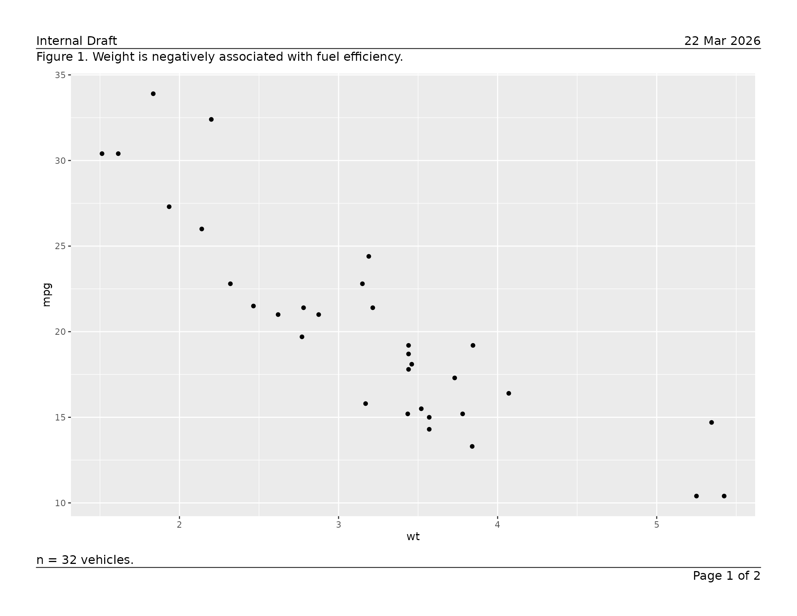
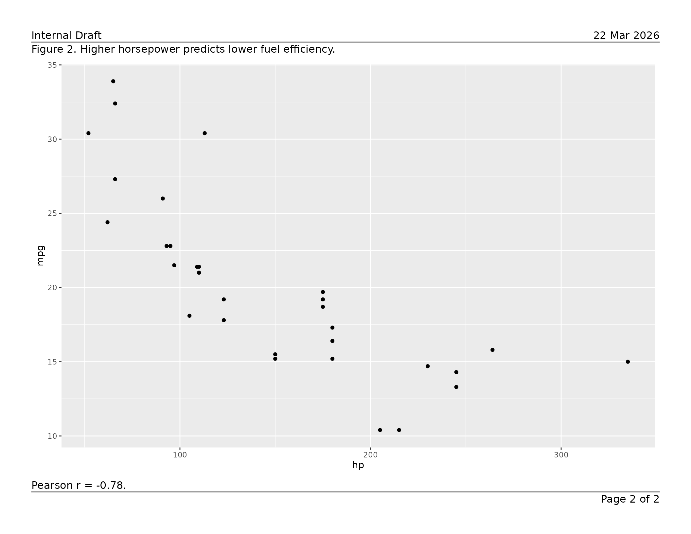
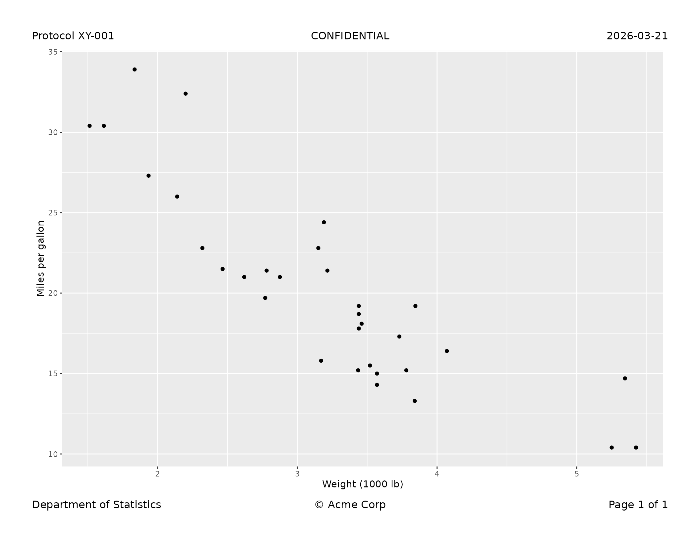
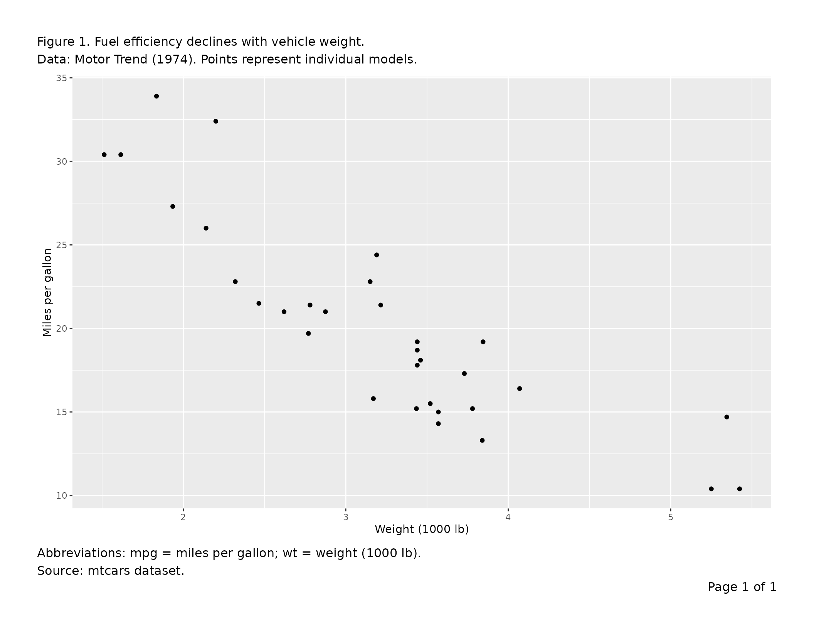
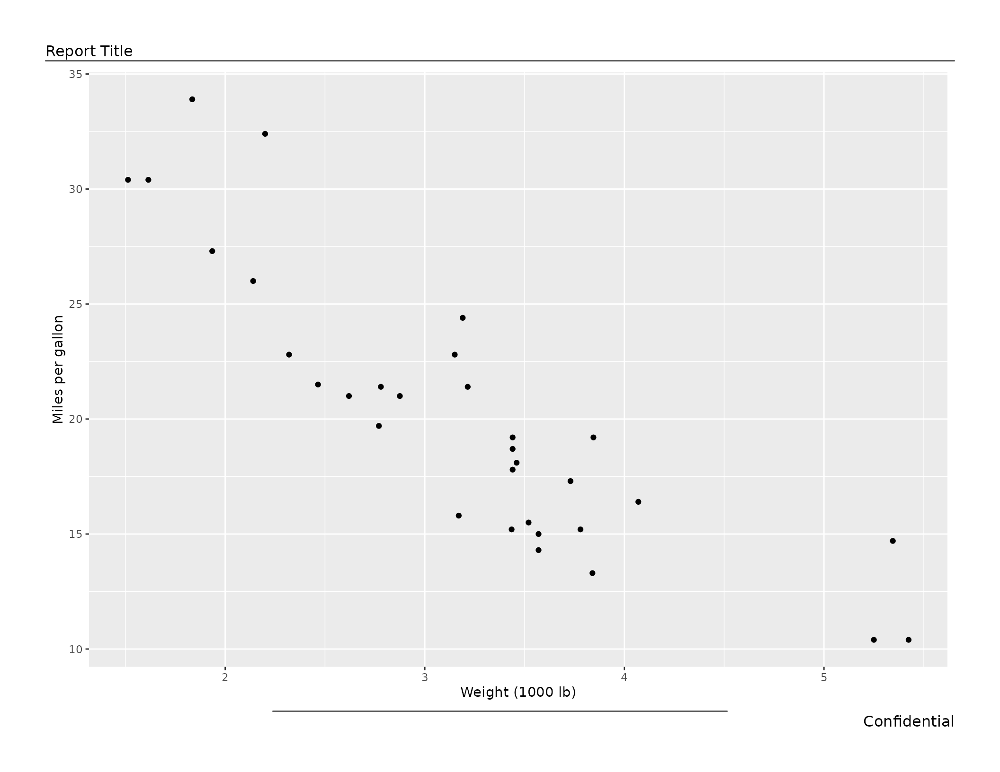
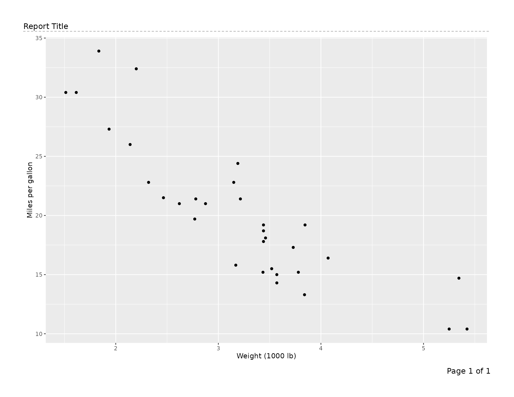
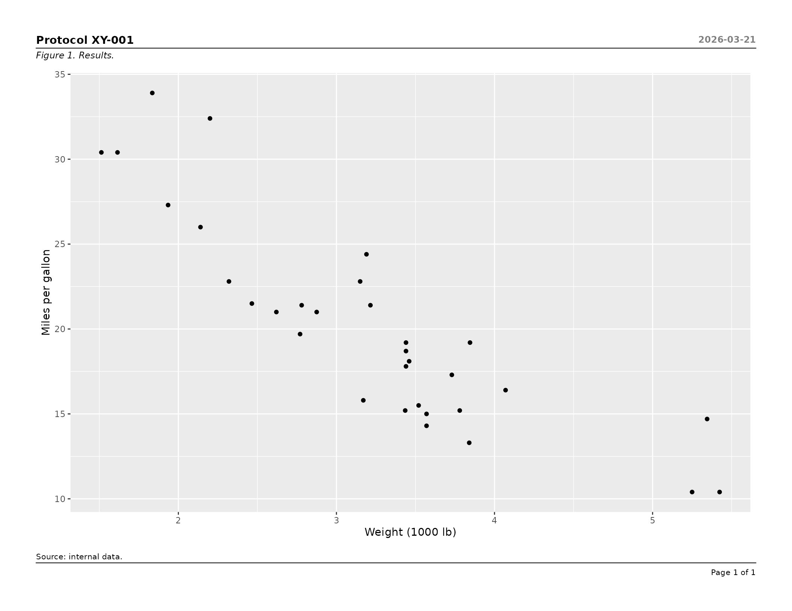
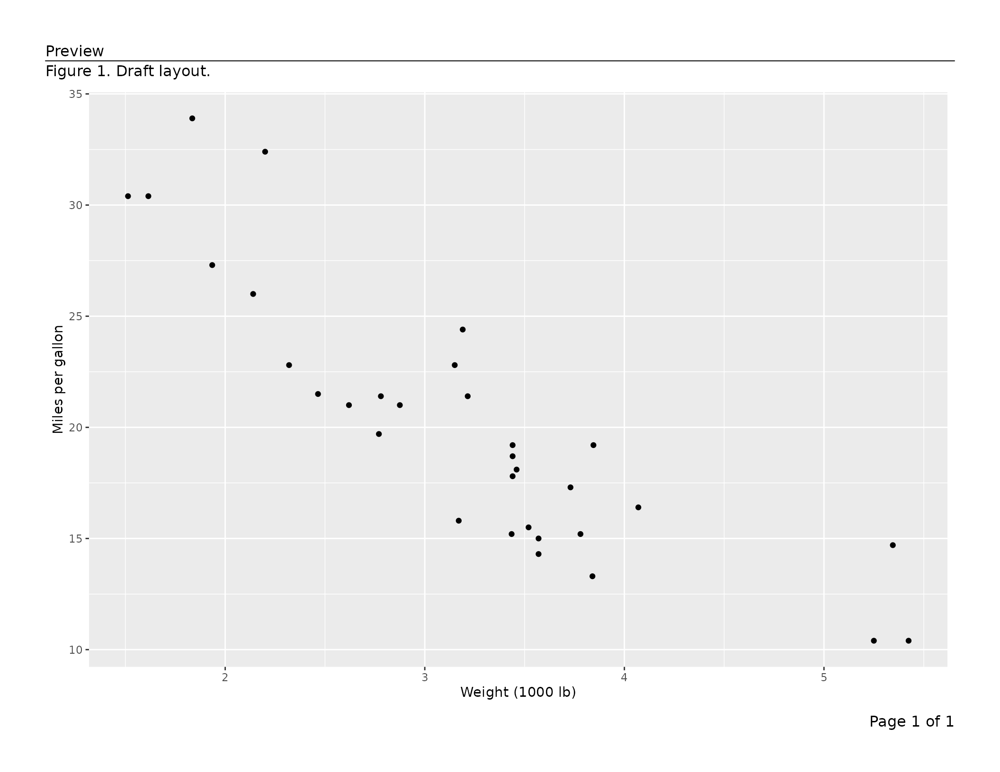

Exporting Figures to PDF
v01-figure_output.RmdThis vignette covers export_tfl() and
export_tfl_page() as used with ggplot2 figures
and grid grobs. For data-frame table output, see
vignette("v02-tfl_table_intro") and
vignette("v03-tfl_table_styling").
Typical use
Saving a single figure
Pass one ggplot object directly. A page number
("Page 1 of 1") is added to the bottom-right corner
automatically.
p <- ggplot(mtcars, aes(wt, mpg)) +
geom_point() +
labs(x = "Weight (1000 lb)", y = "Miles per gallon")
export_tfl(p, preview = TRUE)
A report with a header on every page
Supply shared annotations via ...; they apply to every
page. Here the report title goes top-left and the date top-right,
separated from the content by a full-width rule.
plots <- list(
list(content = ggplot(mtcars, aes(wt, mpg)) + geom_point() +
labs(title = "Weight vs MPG")),
list(content = ggplot(mtcars, aes(hp, mpg)) + geom_point() +
labs(title = "Horsepower vs MPG")),
list(content = ggplot(mtcars, aes(disp, mpg)) + geom_point() +
labs(title = "Displacement vs MPG"))
)
export_tfl(
plots,
file = "report.pdf",
header_left = "Fuel Economy Analysis",
header_right = format(Sys.Date(), "%d %b %Y"),
header_rule = TRUE
)Per-page captions and footnotes
Put text that differs per page inside each page’s list element.
Per-page values always override the shared defaults supplied via
....
pages <- list(
list(
content = ggplot(mtcars, aes(wt, mpg)) + geom_point(),
caption = "Figure 1. Weight is negatively associated with fuel efficiency.",
footnote = "n = 32 vehicles."
),
list(
content = ggplot(mtcars, aes(hp, mpg)) + geom_point(),
caption = "Figure 2. Higher horsepower predicts lower fuel efficiency.",
footnote = "Pearson r = -0.78."
)
)
export_tfl(
pages,
preview = TRUE,
header_left = "Internal Draft",
header_right = format(Sys.Date(), "%d %b %Y"),
header_rule = TRUE,
footer_rule = TRUE
)

Using grid grobs as content
Any grid grob is accepted as content, so figures and
hand-assembled grobs can be mixed in one multi-page PDF. The example
below uses gridExtra::tableGrob() to drop a plain matrix
table onto a page alongside a figure.
# Any grid grob works as content
library(gridExtra)
tbl_grob <- tableGrob(head(mtcars[, 1:5], 10))
export_tfl(
list(
list(
content = tbl_grob,
caption = "Table 1. First 10 rows of the mtcars dataset.",
footnote = "Source: Motor Trend (1974)."
),
list(
content = ggplot(mtcars, aes(wt, mpg)) + geom_point(),
caption = "Figure 1. Weight vs MPG."
)
),
file = "mixed.pdf",
header_left = "Analysis Report",
header_rule = TRUE
)For richly paginated data-frame tables — with automatic column
widths, word-wrapping, row and column pagination, and group-aware page
breaks — use tfl_table() instead. See
vignette("v02-tfl_table_intro") for details.
All features, roughly in order of use
Page dimensions and margins
The defaults are landscape letter (11 × 8.5 in) with half-inch margins on all sides. Override any of these:
export_tfl(
p,
file = "portrait.pdf",
pg_width = 8.5,
pg_height = 11,
margins = unit(c(t = 1, r = 0.75, b = 1, l = 0.75), "inches")
)Automatic page numbering
By default the footer right reads "Page {i} of {n}".
Supply a glue template to
change the format, or NULL to turn it off entirely.
# Custom format
export_tfl(plots, file = "numbered.pdf",
page_num = "{i}/{n}")
# No page numbers
export_tfl(plots, file = "no-numbers.pdf",
page_num = NULL)Any footer_right value — whether supplied via
... or inside a page list element — silently overrides
page_num for that page.
pages_custom <- list(
list(content = p, footer_right = "Appendix A"), # overrides page_num
list(content = p) # gets "Page 2 of 2"
)
export_tfl(pages_custom, file = "mixed.pdf")All header and footer positions
Both the header and footer rows have left, centre, and right slots. Any combination can be used; absent slots consume no space.
export_tfl(
p,
preview = TRUE,
header_left = "Protocol XY-001",
header_center = "CONFIDENTIAL",
header_right = "2026-03-21",
footer_left = "Department of Statistics",
footer_center = "\u00a9 Acme Corp",
footer_right = "Page 1 of 1"
)
Multi-line text
Pass a character vector to any text argument; elements are joined
with "\n". Alternatively, embed "\n" directly
in a string. Both styles are equivalent and both affect the reserved
section height automatically.
export_tfl(
p,
preview = TRUE,
caption = c(
"Figure 1. Fuel efficiency declines with vehicle weight.",
"Data: Motor Trend (1974). Points represent individual models."
),
footnote = "Abbreviations: mpg = miles per gallon; wt = weight (1000 lb).\nSource: mtcars dataset."
)
Separator rules
header_rule draws a line between the header row and the
caption or content. footer_rule draws a line between the
content or footnote and the footer row. Both live inside the padding gap
and do not add height.
| Value | Effect |
|---|---|
FALSE (default) |
no rule |
TRUE |
full-width rule |
0.5 |
rule at 50 % of the viewport width, centred |
linesGrob(...) |
custom grob, drawn as-is |
# Full-width header rule, half-width footer rule
export_tfl(
p,
preview = TRUE,
header_left = "Report Title",
footer_right = "Confidential",
header_rule = TRUE,
footer_rule = 0.5
)
# Custom grob: dashed rule
dashed_rule <- linesGrob(
x = unit(c(0, 1), "npc"),
y = unit(c(0.5, 0.5), "npc"),
gp = gpar(lty = "dashed", col = "gray60"),
name = "dashed"
)
export_tfl(
p,
preview = TRUE,
header_left = "Report Title",
header_rule = dashed_rule
)
Typography with gp
Pass a single gpar() to style all text uniformly, or a
named list for section- or element-level control. Resolution priority
(highest wins): element → section → global.
# All annotation text at 10 pt
export_tfl(
p,
file = "gp-global.pdf",
header_left = "Report",
caption = "Figure 1.",
gp = gpar(fontsize = 10)
)
# Section-level and element-level overrides
export_tfl(
p,
preview = TRUE,
header_left = "Protocol XY-001",
header_right = "2026-03-21",
caption = "Figure 1. Results.",
footnote = "Source: internal data.",
header_rule = TRUE,
footer_rule = TRUE,
gp = list(
header = gpar(fontsize = 11, fontface = "bold"),
header_right = gpar(fontsize = 9, col = "gray50"),
caption = gpar(fontsize = 9, fontface = "italic"),
footnote = gpar(fontsize = 8),
footer = gpar(fontsize = 8)
)
)
Caption and footnote justification
export_tfl(
p,
file = "centred-caption.pdf",
caption = "Figure 1. Centred caption text.",
footnote = "Right-aligned footnote.",
caption_just = "centre",
footnote_just = "right"
)Controlling inter-section padding
padding sets the vertical gap between any two adjacent
present sections. Rules are drawn at the midpoint of this gap. Increase
it for more breathing room or decrease it to pack the layout
tightly.
export_tfl(
p,
file = "tight.pdf",
header_left = "Header",
caption = "Caption",
footnote = "Footnote",
padding = unit(0.08, "lines")
)Minimum content height guard
min_content_height (default
unit(3, "inches")) prevents the content area from being
squeezed to an unreadable size. If the computed content height falls
below this threshold after all other sections are placed, the call
errors with an informative message before any drawing occurs.
# Relax the guard for a very tall annotation stack
export_tfl(
p,
file = "tall-annotations.pdf",
pg_height = 6,
header_left = "Title",
caption = paste(rep("Long caption. ", 20), collapse = ""),
min_content_height = unit(1.5, "inches")
)Overlap detection
When left and right header or footer text are wide enough to risk
collision, writetfl warns or errors automatically.
- Gap < 0 (true overlap) → error before drawing.
- 0 ≤ gap <
overlap_warn_mmmm →rlang::warn()(drawing still proceeds). -
overlap_warn_mm = NULL→ detection disabled entirely.
# Tighten the warning threshold to catch moderate crowding early
export_tfl(
p,
file = "overlap-check.pdf",
header_left = "A moderately long left header",
header_right = "A moderately long right header",
overlap_warn_mm = 20
)
# Silence overlap detection for a layout you have manually verified
export_tfl(
p,
file = "no-overlap-check.pdf",
header_left = "Left",
header_right = "Right",
overlap_warn_mm = NULL
)Preview mode (interactive layout tuning)
preview = TRUE in export_tfl() draws to the
current device without opening or closing a PDF. Pass specific page
numbers as an integer vector (e.g. preview = c(1, 3)) to
render only those pages. Both are useful for interactive inspection in
RStudio or Positron, and for rendering inline graphics in vignettes and
reports.
The lower-level export_tfl_page() also accepts
preview = TRUE, which is useful when building a single page
interactively:
export_tfl_page(
x = list(content = p),
header_left = "Preview",
caption = "Figure 1. Draft layout.",
footer_right = "Page 1 of 1",
header_rule = TRUE,
preview = TRUE
)
To iterate quickly, call this repeatedly until the layout looks
right, then switch to export_tfl() for the final PDF.
Reference: argument priority order
When export_tfl() is used, the same argument can be
specified at up to three levels. The highest-priority value wins:
| Priority | Where set | Example |
|---|---|---|
| 1 (highest) | Inside a page list element | list(content = p, caption = "Per-page") |
| 2 |
... of export_tfl()
|
export_tfl(..., caption = "Shared") |
| 3 (lowest) |
export_tfl_page() defaults |
caption = NULL |
page_num is applied after this merging: it populates
footer_right only if footer_right remains
NULL after steps 1 and 2.